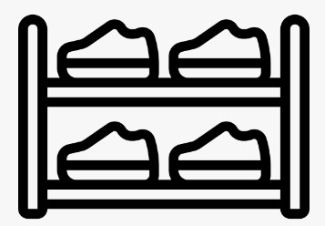
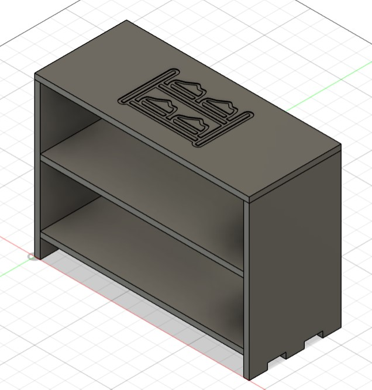
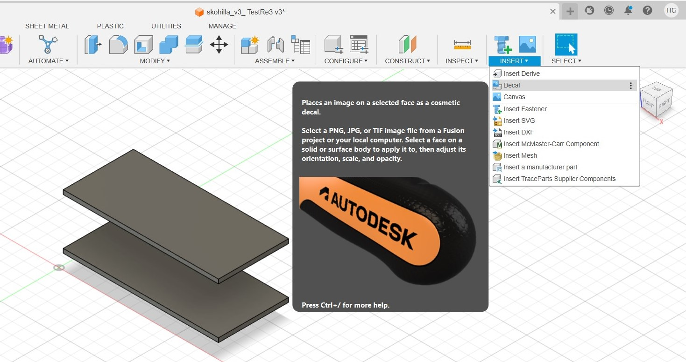
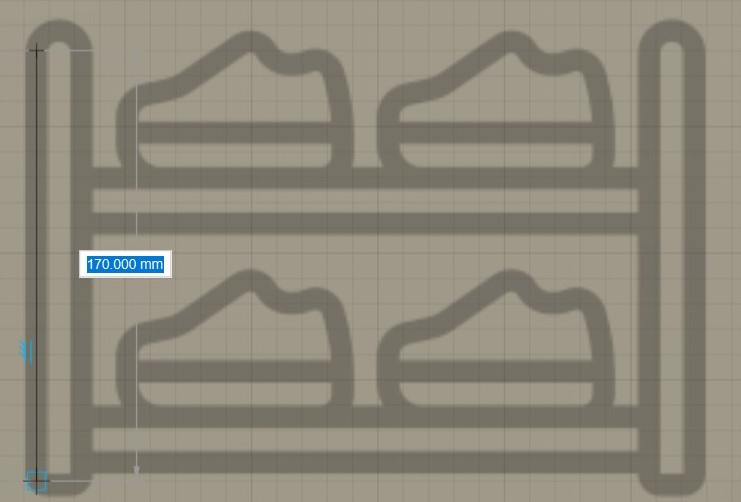
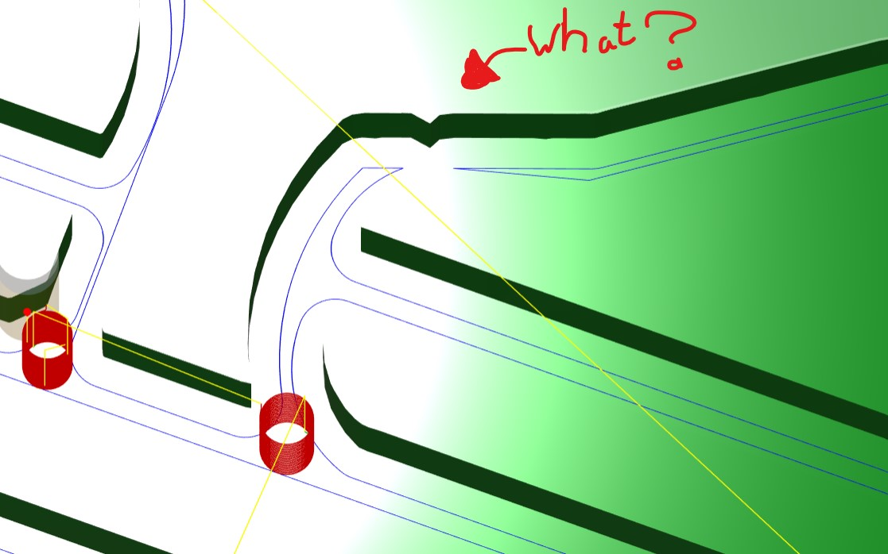
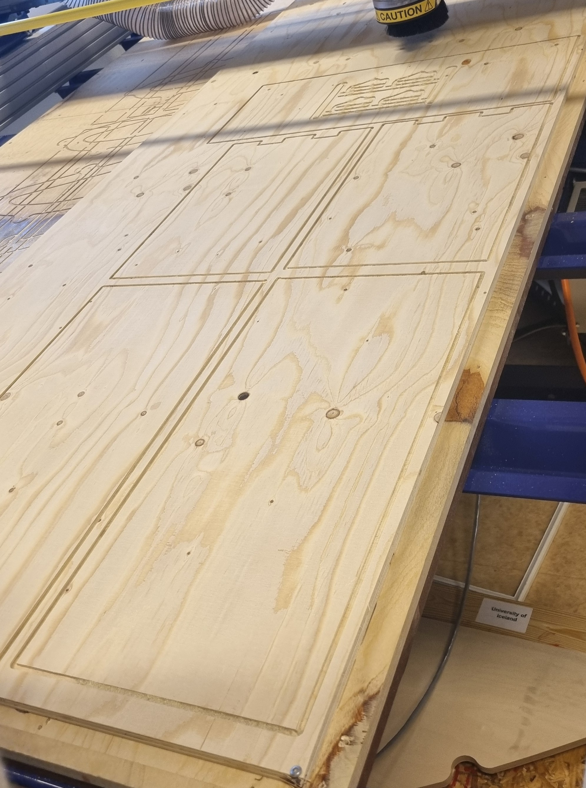
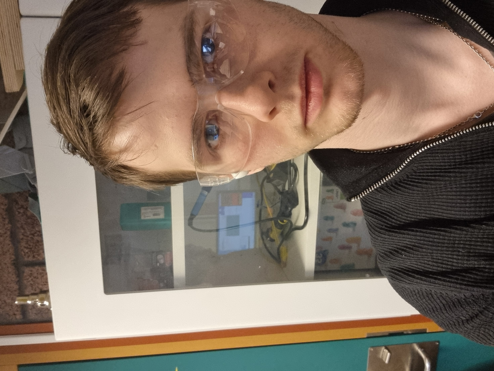
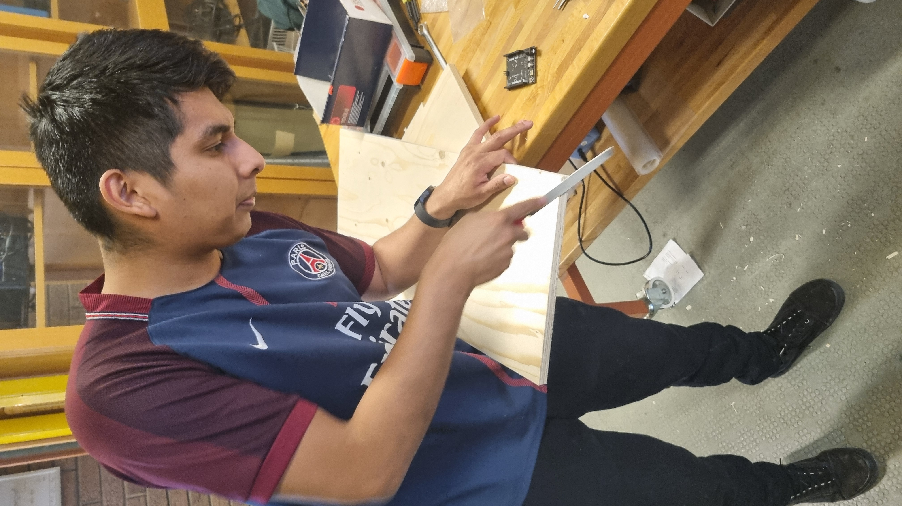

Lokaverkefni
Hópur 11
Ayushtseren Khash-Erdene, Halldór Óli Gunnarsson og Leonardo Pool Cordova Pillace.
Skóhilla
Skipta Verkefni
Þegar ég kom inn í hópinn sem þriðji meðlimurinn var nú þegar búið að velja verkefni. Það var ákveðið að fræsa skóhillu. Hugmyndin var að ég myndi gera lím miða á skóhilluna en mér fannst það ekki vera persónulega nóg að gera fyrir lokaverkefni þannig ég ákvað að teikna og fræsa mynd á skóhilluna í staðinn.
Leitun á mynd.
Hér er myndin sem ég ákvað að teikna.
Ég leitaði á google og öðrum vefsíðum að mynd sem myndi passa við það sem við vorum að hana. Þessi mynd passar mjög vel með hönnuninni því við erum að gera
Fusion 360
Teikning
Til þess að teikna mynd á skóhilluna ákvað ég að nota

og valið yfirborð.
Vandamál við teikningu
Þegar ég teiknaði þessa mynd hélt ég fyrst að ég ætti að teikna leiðina sem shop bot borinn ætti að ferðast þannig
ég teiknaði eina línu í miðju myndinnar.

fyrst notaði ég aðallega "Line" og "Fit point spline" sem var frekar einfalt.
En svo þegar ég var í manufacture fataði ég að það átti að teikna sketch og nota extrude.
Simulation
Eftir það teiknaði ég skectch línur meðfram svörtu línunum og notaði extrude með dýpt 2mm. Eftir að teikninginn var tilbúin fór ég í manufacture til að prufa simulation. Og það kom í ljós að það var vandamál með teikningun, ég veit ekki afhverju en það var partur af myndinni sem var að skerast.

Ég endur gerði skectchið aftur og þá hvarf villan.
Loka teikninginn var
Leit að stillingum
Svo var notað align til að setja alla bita á sama plain og hæð til að byrja að skera þá út með Shop Bot.
En þegar ég fór í manufacture byrjaði ég að leyta af upplýsingum um hvernig bor við værum að nota, hversu hratt borinn ætti að hreyfast og hvernig viður við værum að nota. Ég eyddi nokkrum klukkutímum í að leyta af því en kennarinn okkar endaði á að gera það fyrir mig.
Shop bot fræsing.
Við shop bot fræsingu setti kennarinn inn nauðsýnlegar upplýsingar og við fórum að fræsa.
Viðurinn sem við notuðum heytir krossviður og við setum á varnar gleraugu.

Við gerðum ekki mikið annað en fylgjast með shop bot fræsa og býða tilbúnir að stöðva vélinna ef villa kom upp.
Svo eftir það þrifum við vélina og pússuðum viðin.

| Time | |
|---|---|
| Xa | min |
| Xb | min |